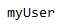
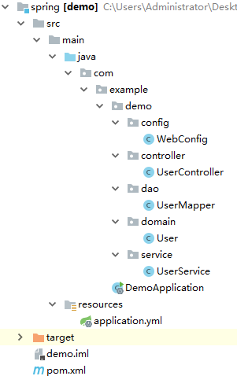
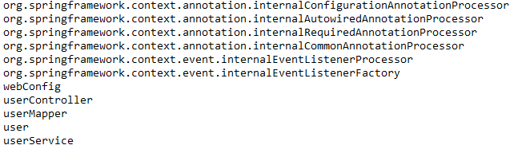

接触过Spring的同学肯定都听过IOC。在传统的Java编程中，当需要用到某个对象的时候，我们都是主动地显示创建一个对象实例（new）。使用Spring后就不需要这样做了，因为Spring会帮我们在需要用到某些对象的地方自动注入该对象，而无须我们自己去创建。这种模式我们也成为控制反转，即IOC（Inversion of Control）。那么Spring是从什么地方获取到我们所需要的对象呢？其实Spring给我们提供了一个IOC容器，里面管理着所有我们需要的对象，组件注册就是我们去告诉Spring哪些类需要交给IOC容器管理。
通过@Bean注册组件
在较早版本的Spring中，我们都是通过XML的方式来往IOC容器中注册组件的，下面这段代码大家肯定不会陌生：
1 | // 返回 IOC 容器，基于 XML配置，传入配置文件的位置 |
Spring 4后推荐我们使用Java Config的方式来注册组件。
为了演示，我们通过http://start.spring.io/搭建一个简单Spring Boot应用，然后引入Lombok依赖（编辑器也需要安装Lombok插件）：
1 | <dependency> |
然后创建一个User类：
1 |
|
接着创建一个配置类，在里面通过@Bean注解注册User类：
1 |
|
通过@Bean注解，我们向IOC容器注册了一个名称为user（Bean名称默认为方法名，我们也可以通过@Bean("myUser")方式来将组件名称指定为myUser）。
组件注册完毕后，我们测试一下从IOC容器中获取这个组件。在Spring Boot入口类中编写如下代码：
1 |
|
因为我们是通过注解方式来注册组件的，所以需要使用AnnotationConfigApplicationContext来获取相应的IOC容器，入参为配置类。
启动项目，看下控制台输出：
说明组件注册成功。
我们将组件的名称改为myUser，然后看看IOC容器中，User类型组件是否叫myUser：
1 |
|
启动项目，观察控制台输出:

使用@ComponentScan扫描
在使用XML配置组件扫描的时候，我们都是这样配置的：
1 | <context:component-scan base-package=""></context:component-scan> |
其中base-package指定了扫描的路径。路径下所有被@Controller、@Service、@Repository和@Component注解标注的类都会被纳入IOC容器中。
现在我们脱离XML配置后，可以使用@ComponentScan注解来扫描组件并注册。
在使用@ComponentScan扫描之前，我们先创建一个Controller，一个Service，一个Dao，并标注上相应的注解。项目结构如下所示：

然后修改配置类：
1 |
|
在配置类中，我们通过@ComponentScan("com.example.demo")配置了扫描路径，并且将User组件注册注释掉了，取而代之的是在User类上加上@Component注解：
1 |
|
住的注意的是，我们不能将Spring Boot的入口类纳入扫描范围中，否则项目启动将出错。
接下来我们看下在基于注解的IOC容器中是否包含了这些组件：
1 |
|
启动项目，观察控制台：

可见，组件已经成功被扫描进去了，并且名称默认为类名首字母小写。
这里，配置类WebConfig也被扫描并注册了，查看@Configuration源码就会发现原因：
1 | (ElementType.TYPE) |